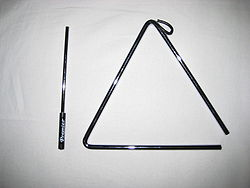

The triangle is an idiophone type of musical instrument in the percussion
family. It is a bar of metal, usually steel but sometimes other metals like
beryllium copper, bent into a triangle shape.
The instrument is usually held by
a loop of some form of thread or wire at the top curve. It was first made around
the 16th century in England.
The triangle is often the subject of jokes and one liners in Europe and North
America as an archetypal instrument that requires no skill to play. (The Martin
Short character Ed Grimley is an example.)
However, triangle parts in classical
music can be very demanding, and James Blades in the Grove Dictionary of Music
and Musicians writes that "the triangle is by no means a simple instrument to
play". In the hands of an expert it can be a subtle and expressive instrument
that makes a beautiful tone/pitch with the vibration.
A triangle roll, similar to a snare roll, is notated with three lines through
the stem of the note. It requires the player to quickly move the wand back and
forth in the upper corner, bouncing or "rolling" the wand between the two sides.

Classical music:
In European classical music, the triangle has been used in the western classical
orchestra since around the middle of the 18th century. Wolfgang Amadeus Mozart,
Joseph Haydn and Ludwig van Beethoven all used it, though sparingly, usually in
imitation of Janissary bands.
The first piece to make the triangle really
prominent was Franz Liszt's Piano Concerto No. 1, where it is used as a solo
instrument in the third movement, giving this concerto the nickname of "triangle
concerto".
In the 19th century, the triangle was used in some music by Richard
Wagner, such as the "Bridal chorus" from Lohengrin. Johannes Brahms uses the
triangle to particular effect in the third movement of his Fourth Symphony.
The
triangle is used extensively in Hans Rott's Symphony in E major, particularly in
the BIS recording, and in later recordings, the conductor has reduced its role.
Most difficulties in playing the triangle come from the complex rhythms which
are sometimes written for it, although it can also be quite difficult to control
the level of volume.
Very quiet notes can be obtained by using a much lighter
beater knitting needles are sometimes used for the quietest notes.
Composers sometimes call for a wooden beater to be used instead of a metal one,
which gives a rather "duller" and quieter tone.
When the instrument is played
with one beater, the hand that holds the triangle can also be used to damp or
slightly modify the tone. For complex rapid rhythms, the instrument may be
suspended from a stand and played with two beaters, although this makes it more
difficult to control.